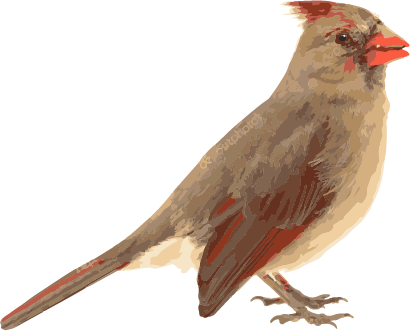

The male Northern Cardinal is perhaps responsible for getting more people to open up a field guide than any other bird. They’re a perfect combination of familiarity, conspicuousness, and style: a shade of red you can’t take your eyes off. Even the brown females sport a sharp crest and warm red accents. Cardinals don’t migrate and they don’t molt into a dull plumage, so they’re still breathtaking in winter’s snowy backyards. In summer, their sweet whistles are one of the first sounds of the morning.
Northern Cardinals eat mainly seeds and fruit, supplementing these with insects (and feeding nestlings mostly insects). Common fruits and seeds include dogwood, wild grape, buckwheat, grasses, sedges, mulberry, hackberry, blackberry, sumac, tulip-tree, and corn. Cardinals eat many kinds of birdseed, particularly black oil sunflower seed. They also eat beetles, crickets, katydids, leafhoppers, cicadas, flies, centipedes, spiders, butterflies, and moths.
Look for Northern Cardinals in dense shrubby areas such as forest edges, overgrown fields, hedgerows, backyards, marshy thickets, mesquite, regrowing forest, and ornamental landscaping. Cardinals nest in dense foliage and look for conspicuous, fairly high perches for singing. Growth of towns and suburbs across eastern North America has helped the cardinal expand its range northward.
A week or two before the female starts building, she starts to visit possible nest sites with the male following along. The pair call back and forth and hold nesting material in their bills as they assess each site. Nests tend to be wedged into a fork of small branches in a sapling, shrub, or vine tangle, 1-15 feet high and hidden in dense foliage. They use many kinds of trees and shrubs, including dogwood, honeysuckle, hawthorn, grape, redcedar, spruce, pines, hemlock, rose bushes, blackberry brambles, elms, sugar maples, and box elders.
Males sometimes bring nest material to the female, who does most of the building. She crushes twigs with her beak until they’re pliable, then turns in the nest to bend the twigs around her body and push them into a cup shape with her feet. The cup has four layers: coarse twigs (and sometimes bits of trash) covered in a leafy mat, then lined with grapevine bark and finally grasses, stems, rootlets, and pine needles. The nest typically takes 3 to 9 days to build; the finished product is 2-3 inches tall, 4 inches across, with an inner diameter of about 3 inches. Cardinals usually don’t use their nests more than once.